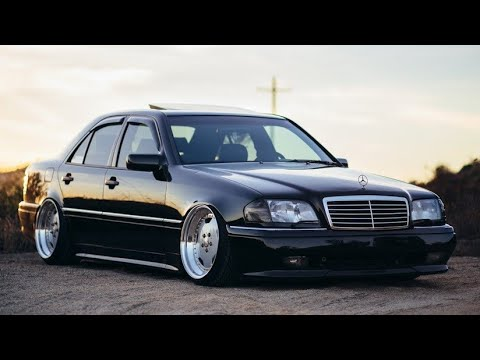

Mercedes-Benz W202 is the internal designation for a compact sedan/saloon manufactured and marketed by Mercedes-Benz 1993–2000, as the first generation of the C-Class, now in its fifth generation. Replacing the 190 series/W201 in June 1993, the C-Class sedan was Mercedes' entry-level model until 1997, when the company launched the A-Class. Production reached 1,847,382 over model years 1994–2000.
Development started on a replacement to the 190 series in October 1986, with design work commencing in 1987 under Bruno Sacco. By 1988, the first full-scale models were made, narrowed to two design directions by December 1988. The design by Olivier Boulay was chosen in 1989 and the production design was frozen in January 1990, subsequently patented on 19 December 1990.Rough prototypes went into testing in 1989, with first production design prototypes commencing testing in 1990.
The C-Class debuted with a complete lineup of multi-valve engines. The family of four-cylinder petrol units, called M111, debuted in the C 180 (1.8 L, 122 PS (90 kW; 120 hp)), C 200 (2.0 L, 136 PS (100 kW; 134 hp) and C 220 (2.2 L, 150 PS (110 kW; 148 hp), the only four-cylinder of the range sold in the U.S.). In 1997 the C 220 was replaced by the C 230, enlarged to 2.3 L displacement but with the same output, although with torque increased to 220 N⋅m (162 lb⋅ft). The C 280 was the high-end model of the class, with a four-valve-per-cylinder straight-six engine, capable of reaching 193 PS (142 kW; 190 hp).